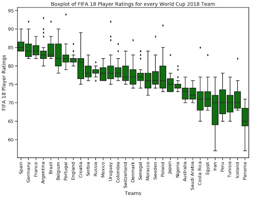

Team Members: * Brian Lin * Pat Sukhum * Shane Ong * Matteo (Yun Bin) Zhang
We have met with our fellow teammates and teaching fellow to craft the following plans as detailed below.
While soccer is one of the most popular sports in the world, its analytics is lackluster in comparison to other popular sports such as baseball, American football, hockey, and basketball. This is due to the fact that aside from the World Cup, international teams don’t play each other very frequently. Therefore, there is a lack of high quality data that can be immediately fed into models to perform predictions. Thus, we are interested in collecting data from various different sources and perform feature engineering to produce highly relevant features for soccer analytics. Finally, our end goal is to predict the results of World Cup as accurately as possible, while analyzing what factors might be significant in predicting the results. The World Cup is composed of 64 matches in total - 48 matches in group stages and 16 matches in knockout (15 + 1 for third place). We plan to predict the outcome of each of the 64 matches independently instead of predicting which teams proceed in each round. This strategy allows our results to be comparable across models. By framing the problem in this way, we plan to approach this problem as a classification problem. Each game can be treated as a multi-class classification problem, where there are three outcomes: win for the home team (or team 1), win for the away team (or team 2), or a draw. In the case of knockouts, we limit the outcome to: win for the home team (or team 1), win for the away team (or team 2), as draws are not allowed. To validate how accurate FIFA rankings are, we also aim to use a baseline model that leverages FIFA rankings and some other simple predictors to predict the World Cup results. Along with that, we will also evaluate some simple baseline models such as randomly predicting the winner for each match and create a model as accurate as possible based on sources other than FIFA rankings. Finally, the analysis will be concluded by highlighting the best performing model and the features contributing to such results.
Potential models to test out: One vs All Logistic Regression and Multinomial Logistic Regression - the linearity in coefficients might give us an insight into what features might be relevant Random Forest - the go-to out of box model for classifications due to generally good performance even with little tuning XGBoost - tree gradient boosting method that performs the best in Kaggle competitions amongst non-ensemble models Neural networks - if we can find enough data, then this might be a good idea to test out Potential predictors that we believe it might help in the analysis: Win rate of teams in the past 4 years - indicating how victorious the team might be overall since high win rate teams might keep winning and low win rate just keep losing Mean FIFA 18 rankings of players on each team - a summary of team strength to help determine which team is stronger Proportion of veterans and new players in each team - can be a penalty factor on the team strength if too many new players as coordination might be lacking Historical head-to-head win rate between each team - some team’s strategies/style might have an advantage over certain teams Average player strength of each team, derived by league match performances - again another summary of team strength
Output: Multinomial classification - predicting the outcome of the match as win (team 1 wins), draw, lose (team 2 wins) ## Sources of Predictors/Data fifa.com: Provides the rankings of the national teams. In particular, https://www.fifa.com/fifa-world-ranking/ranking-table/men/rank=287/index.html provides the ranking of teams on June 7, 2018, just before the world cup. We need to scrape this link using BeautifulSoup in order to make a baseline model.
The staff has provided several datasets on current players and their ratings scraped from sofifa.com. We can also scrape player data from the past.
The staff has also provided us a dataset of past international matches (international_results.csv). This dataset tells us the home team, away team, home score, away score, tournament type, city, country, and neutrality for each match. There are also some results for the 2018 World Cup, which we will have to remove. We also have to explicitly calculate the winner of each match, which can be easily engineered by the difference in home score and away score (> 0 means home team win, = 0 means draw, and < 0 means away team win. Then map home team win to 1, home team loss to 0, and draw to 2). Then, this dataset would become a good basis for the training data. We might have to only keep data after a certain time due to the lack of data on players, change in conditions of countries, etc. from other data sources (Maybe after 2014?).
Wikipedia lists out the squads of each participating country in each World Cup (i.e. https://en.wikipedia.org/wiki/2018_FIFA_World_Cup_squads for 2018. Replace 2018 with 2014 for 2014 squads, etc.). We can scrape this data and give each team an average rating for each position based on the players.
Wikipedia also has demographic information about each country. There might be some correlation between variables such as real GDP, real GDP per capita, with the performance of the national team. We would need to scrape this data using BeautifulSoup.
For filling the missing values, we are considering: 1. dropping the
observations; 2. Imputing using other sources; 3. Imputing using linear
regression or K-means where the feature containing missing values is
treated as the dependent variable and other predictors are set as
independent variables. We plan to create some aggregated features, such
as the average strength of the players in the team, mean rankings of the
players etc. as mentioned above in predictors section. After
obtaining all the data, we will standardize non-categorical and
non-percentage variable to make them on a comparable scale. Using
logistic regression, we might try to control for some features to remove
potentially irrelevant features. Another way of approaching this would
be to use PCA to carry out dimensionality reduction. Finally, we will
try to remove outliers by using 1.5 IQR or variance inflation factor
methods.
We plan to consider two metrics to evaluate our models. The first one is the accuracy of the predictions since we ultimately want to see what percentage of the time the model correctly predicts. The second is the negative log loss since we also care about how confident our model was in each of its right/wrong prediction. The loss that we will try to minimize is the sum of negative log loss as this will tell us how confident our model was when our prediction was correct and how far off we were when our prediction was wrong. In addition, log loss can also be easily adapted for multi-class classifications.
Collecting players’ data: Brian by November 2nd
Collecting past matches: Pat by November 2nd
Cleaning the data so that they are readily available, such as joining different data frames: Shane, Matteo by November 9th
Feature engineering: imputing missing values, standardizing/scaling features and create new relevant features based on what’s available: Matteo by November 9th
Baseline evaluations: Brian, Shane by November 13th
Model building: Logistic regression, random forest, extreme gradient boosting (XGBoost), LDA, etc. Everyone will be in charge of a different model by November 20th
Feature analysis: Everyone in charge of their own model by November 20th
Milestone 3 Write Up: Split evenly depending on what task each one is responsible for by November 24th
Milestone 3 Submission: Matteo, Brian, Shane will organize the write up and submit on canvas by November 27th
Building website with good style: Pat will work on the website as we make more progress on project
Intuitively, we would think that a team’s recent win rate is a good indicator of their performance in the World Cup. As such, we decided to look at a team’s win rate from 2014 to just before the world cup for teams in the 2018 World Cup. As we see, the teams with the highest win rate are indeed some of the top tier teams.

We also used data from sofifa provided by the staff get individual player ratings. We used the summary statistic ‘Overall’, which is a common measure of a player’s ability and performance. We then plotted a boxplot of the top 23 players ratings for each participating nation. Intuitively, this would give us an intuition into the spread of players ability for each participating nation. We can see that there are teams that are ‘top heavy’, and are over-reliant on a few good players (i.e. Argentina and Portugal).
In [ ]: